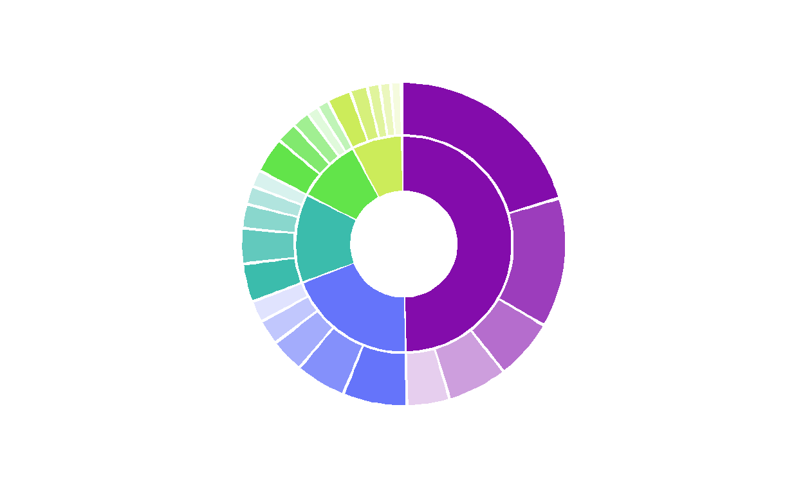

TL; DR
I manually defined geom_rect to create custom sunbursts with ggplot. Pair this with ggiraph package to create an awesome interactive graphic!
Background
Sunbursts in R first caught my eye from the sunburstR package with its awesome interactivity through d3. However, I had trouble customizing it and sought a ggplot alternative. You can create a version using geom_col, as shown in this RStudio Community Post; I chose to go the more complex geom_rect route for more customization options. It was pretty exciting when I got it to work!
pretty pumped I got this custom “sunburst”-esque figure to work!! #ggplot #rstats pic.twitter.com/L88IQWoVCs
— Shannon Pileggi (@PipingHotData) January 10, 2020
The data
To illustrate the concept on a publicly available data set, I am using the May 2021 #TidyTuesday salary data. Here, I’ll be looking at the top 5 industries and job titles.
The data attributes that work well for this set up include:
4-6 categories, with associated weight or frequency of occurrence
- our categories are the top 5 industries
4-6 sub-items within each category, with associated weight or frequency of occurrence
- our sub-items are the top 5 job titles within industry
- optional: a metric for the sub-items
- our metric is the median salary for the titles
Libraries
Data processing
Import
First, import the data from GitHub.
# import data
survey_raw <- readr::read_csv('https://raw.githubusercontent.com/rfordatascience/tidytuesday/master/data/2021/2021-05-18/survey.csv')
Summarize
Next, summarize the data in terms of the top 5 industries and top 5 job titles. For the job title, we’ll get (1) the percent of respondents with that title, and (2) the median salary for that title.
survey_summary <- survey_raw %>%
# identify top industries
group_by(industry) %>%
mutate(
# number of respondents per industry
n_industry = n()
) %>%
ungroup() %>%
arrange(desc(n_industry), industry) %>%
mutate(
# rank of industry in terms of number of survey respondents
# know a better way to do this bit? pls let me know!
n_industry_rank = as.numeric(factor(-n_industry)),
# very light cleaning of job title
job_title = tolower(job_title) %>%
str_remove_all("[:digit:]+") %>%
str_trim() %>%
ifelse(. == "rn", "registered nurse", .)
) %>%
# reduce to top 5 industries present
filter(n_industry_rank %in% 1:5) %>%
# identify top 5 job titles in each industry
group_by(n_industry_rank, n_industry, industry, job_title) %>%
summarize(
# number of titles within industry
n_title = n(),
# median salary per title
median_salary = median(annual_salary)
) %>%
ungroup() %>%
arrange(n_industry_rank, industry, desc(n_title)) %>%
group_by(industry) %>%
# keep top 6 job titles within industry
slice(1:5) %>%
# recompute number of respondents per industry based on titles selected
mutate(n_industry = sum(n_title)) %>%
ungroup() %>%
mutate(
# relative scale of salary for plotting
median_salary_scaled = median_salary / max(median_salary) * 100,
# base n respondents
n_total = sum(n_title),
# percent of respondents per title
pct_title = n_title / n_total * 100,
pct_industry = n_industry / n_total * 100,
# unique job title, as some repeat across industry
title_unique = glue::glue("{str_sub(industry, 1, 3)}: {job_title}")
) %>%
arrange(desc(pct_industry, pct_title))
Here is a preview of our data, which is the basis needed for the sunburst’s custom rectangles.
# view input data
DT::datatable(survey_summary)
Assign colors
Pick a color palette for industry, and name the color vector.
colors_industry
Computing or Tech
"#830CAB"
Education (Higher Education)
"#6574FA"
Nonprofits
"#3BBCAC"
Health care
"#62E44A"
Government and Public Administration
"#CCEC5A" Compute rectangles
Next, I manually define the rectangles. I figured out the bits to create custom rectangles from various blog posts that I did not save. It could have been this post on variable width column charts. I got tips on how to angle text for labels from the R Graph Gallery’s circular barplots.
The idea of the rectangles’ color assignment is that darker shades represent more frequent items within a category. To create the colors, I concocted a solution to implement a degree of transparency off of the original industry colors based on the total number of sub-categories. Jake Riley shared with me an alternative solution for sub-category color assignment that he contributed on Stack Overflow.
survey_burst <- survey_summary %>%
# join colors to data frame ----
left_join(enframe(colors_industry, name = "industry", value = "color_industry"),
by = "industry") %>%
# arrange descending industry but ascending title
# to compute title colors
arrange(desc(n_industry), industry, n_title, title_unique) %>%
group_by(industry) %>%
mutate(
# enumerate title in industry
id_title = row_number(),
# number of titles per industry
# this can vary - it does not have to be same number per category
num_title = max(id_title)
) %>%
ungroup() %>%
mutate(
# degree of transparency based on number of attributes ----
color_trans = id_title / num_title ,
color_title = map2_chr(color_industry, color_trans, ~ adjustcolor(.x, .y))
) %>%
# this arrange specifies the ordering of the figure
# clockwise ---
arrange(-pct_industry, industry, -pct_title, title_unique) %>%
# counter clockwise ---
# arrange(pct_industry, industry, pct_title, title_unique) %>%
mutate(
industry = fct_inorder(industry),
title_unique = fct_inorder(title_unique)
) %>%
group_by(industry) %>%
mutate(cum_title_pct = cumsum(pct_title)) %>%
ungroup() %>%
mutate(
cum_industry_pct = cumsum(cum_title_pct),
cum_all = cumsum(pct_title)
) %>%
mutate(
# compute coordinates of the rectangles ----
# the 0.3 is an adjustment on the 0 to 100 scale to add a small
# amount of white space between rectangles
rect_x_max = cumsum(pct_title) - 0.3, # xmax ----
rect_x_min = rect_x_max - pct_title + 0.3, # xmin ----
rect_x_mid = (rect_x_min + rect_x_max)/2, # xmid ----
# angles in case adding text to plot, omitting here ----
angle = 90 - 360 * rect_x_mid / 100,
hjust = ifelse(angle < -90, 1, 0),
angle = ifelse(angle < -90, angle + 180, angle),
# label
label_title = glue::glue('{scales::percent(pct_industry/100, accuracy = 1)} {industry}\n {scales::percent(pct_title/100, accuracy = 1)} {job_title} \n {scales::dollar(median_salary)} median salary'))
# view sunburst data
DT::datatable(survey_burst)
Combine colors
Combine all industry and title colors in a single vector.
colors_title <- survey_burst[["color_title"]] %>%
set_names(survey_burst[["title_unique"]])
all_colors <- c(colors_industry, colors_title)
Inner ring
Lastly in data prep, we create a smaller data set of rectangle coordinates just for the industries.
# create an inner ring for industry ----
layer_industry <- survey_burst %>%
dplyr::select(industry, pct_industry, rect_x_max, rect_x_min) %>%
# first, get stopping point for each rectangle ----
arrange(industry, desc(rect_x_max)) %>%
group_by(industry) %>%
# keep one entry per industry ----
slice(1) %>%
ungroup() %>%
dplyr::select(industry, pct_industry, stop = rect_x_max) %>%
# second, get starting point for each rectangle ----
left_join(
survey_burst %>%
dplyr::select(industry, pct_industry, rect_x_max, rect_x_min) %>%
arrange(industry, rect_x_max) %>%
group_by(industry) %>%
slice(1) %>%
ungroup() %>%
dplyr::select(industry, pct_industry, start = rect_x_min),
by = c("industry", "pct_industry")
) %>%
# insert blank row for extra white space where circle starts/stops ---
bind_rows(
tibble(
attr_category = NA,
start = 99.7,
stop = 100.1)
) %>%
mutate(
# compute midpoint for labeling if needed ----
mid = (stop - start)/2 + start,
# a label for industry pct ----
industry_label = ifelse(is.na(industry), NA, glue::glue('{industry}\n{scales::percent(pct_industry/100, accuracy = 1)}'))
)
# view industry rectangles
DT::datatable(layer_industry)
Sunbursts
Variable length sunburst
Finally, we can plot! This first figure has variable length bars, which are represented by the scaled median salary.
survey_burst %>%
# title ring ----
ggplot(aes(
ymin = 1,
# variable length bars
ymax = median_salary_scaled,
xmin = rect_x_min,
xmax = rect_x_max,
fill = title_unique
)) +
geom_rect(show.legend = FALSE) +
coord_polar() +
theme_minimal() +
theme(
axis.text.x = element_blank(),
axis.text.y = element_blank(),
panel.grid = element_blank(),
legend.position = "none",
) +
# fiddle with what you like here for white space
ylim(-40, 100) +
scale_fill_manual(values = all_colors) +
# inner industry ring ----
geom_rect(
data = layer_industry,
aes(
ymin = -20,
ymax = 0,
xmin = start,
xmax = stop,
fill = industry
)
)

# could add reference line of some sort
# geom_hline(yintercept = 50, color = "gray", lty = 2)
Well, it is an example! Not quite as aesthetically appealing as my original example shown in the tweet, but it will do to put code to the page.
Although I think this figure can be eye-catching, it is challenging to make it informative with labeling and still maintain appeal.
Fixed length sunburst
For a simpler alternative, drop the job title metric of median salary and only show the frequency of industry and title in survey respondents by fixing the rectangle height. This figure can effectively communicate parts of a whole.
survey_burst %>%
# title ring ----
ggplot(aes(
ymin = 1,
# fix rectangle height here
ymax = 20,
xmin = rect_x_min,
xmax = rect_x_max,
fill = title_unique
)) +
geom_rect(show.legend = FALSE) +
coord_polar() +
theme_minimal() +
theme(
axis.text.x = element_blank(),
axis.text.y = element_blank(),
panel.grid = element_blank(),
legend.position = "none",
) +
ylim(-40, 40) +
scale_fill_manual(values = all_colors) +
# industry ring ----
geom_rect(
data = layer_industry,
aes(
ymin = -20,
ymax = 0,
xmin = start,
xmax = stop,
fill = industry
)
)

Interactive sunburst
gg_interactive <- survey_burst %>%
# title ring ----
ggplot(aes(
ymin = 1,
# fix rectangle height here
ymax = 20,
xmin = rect_x_min,
xmax = rect_x_max,
fill = title_unique
)) +
ggiraph::geom_rect_interactive(aes( # add id for tooltip ---
tooltip = label_title), show.legend = FALSE) +
coord_polar() +
theme_minimal() +
theme(
axis.text.x = element_blank(),
axis.text.y = element_blank(),
panel.grid = element_blank(),
legend.position = "none",
) +
ylim(-40, 40) +
scale_fill_manual(values = all_colors) +
# industry ring ----
geom_rect(
data = layer_industry,
aes(
ymin = -20,
ymax = 0,
xmin = start,
xmax = stop,
fill = industry
)
)
girafe(ggobj = gg_interactive,
options = list(opts_tooltip(use_fill = TRUE)))
For fun
I did experiment with some variations on this figure that did not make the cut!
Monday's work 🤔🥰 #rstats #ggplot pic.twitter.com/GbZWLhLeDA
— Shannon Pileggi (@PipingHotData) February 4, 2020